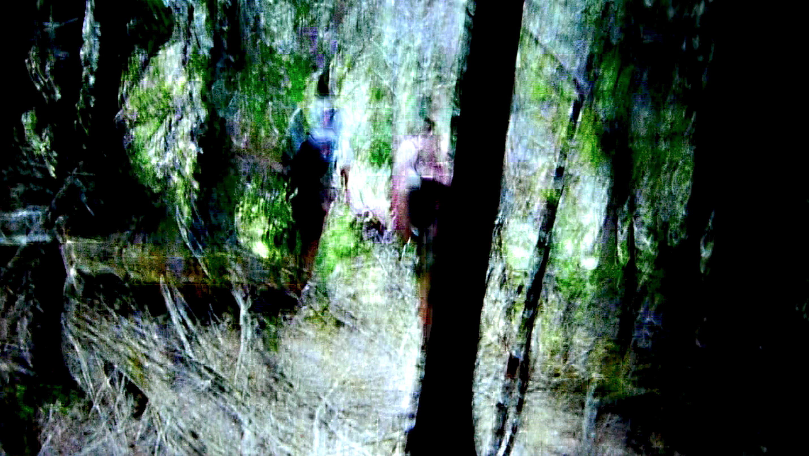
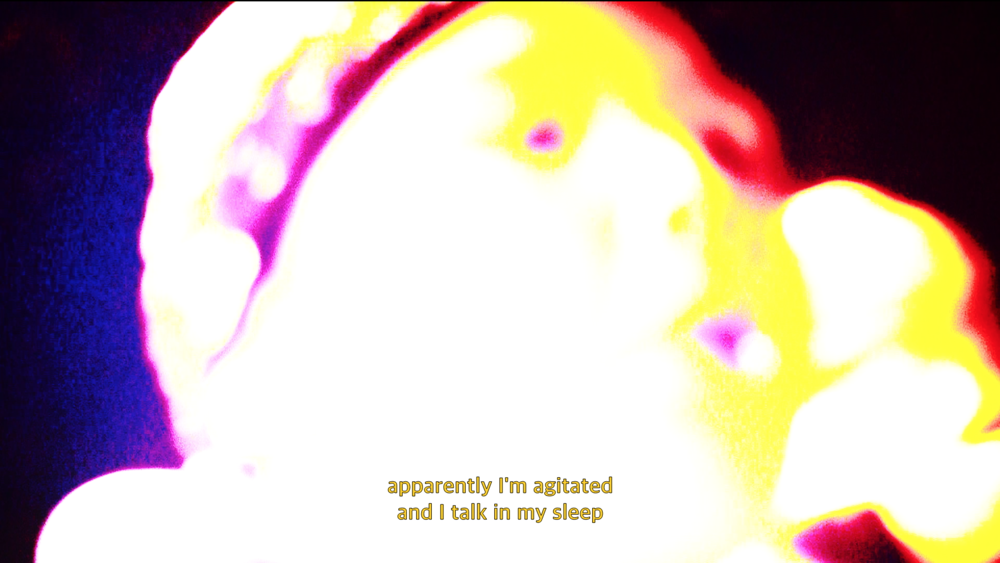

archipels : terres muables, 2020.




Un voyage remixé, transfiguré. Un périple hallucinatoire où s’entremêlent des histoires de survie, d’urgence, de fragilité, d’apocalypses, de résistance. Documentaire expérimental, archipels : terres muables s'est construit empiriquement au fil des rencontres à partir de fragments vidéo, audio et textuels récoltés sur la route - en Islande, dans le grand-nord québécois, au Labrador, en Tunisie et ailleurs.
réalisation, image, son et post-production
Antoine Racine
Myro Le Ber Assiani
traduction
Evelyne Londei-Shortall
distribution
Vidéographe
voix
Geremiah Lorenzo Lodi
Marie-Hélène Chaussé
François Durette
Sylvie Tourangeau
Yves Demers
Jacob Cadieux
Denis Lebel
Dominic Gagnon
Anne-Marie Tanguay
Jacques Deveault
Francesca Wellington
durée
51 minutes
avec la participation du Conseil des Arts et Lettres du Québec
